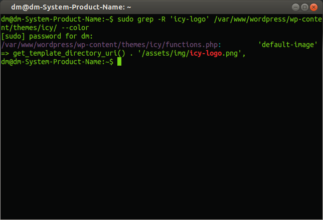

Поиск текста в документах или grep в помощь
Если вы успели заметить, то я сменил дизайн сайта. Именно во время работы над изменением внешнего вида шаблона и возникла мысль написать эту статью. Я не являюсь большим знатоком в плане web-дизайна, поэтому знаю языки PHP, HTML поверхностно. А проблема заключалась в следующем, мне нужно было найти название одного графического файла, имя которого упоминалось в .php файлах темы WordPress. На помощь пришла программа grep.
Для справки — команда grep служит для поиска и фильтрации строк, которые содержат образец заданный пользователем.
Итак продолжу. Для поиска нужной части текста нужно выполнить в Терминале следующую команду:
grep -rl ‘искомая фраза’ /адрес каталога для поиска/
в итоге у меня получилась вот такая команда:
sudo grep -rl 'icy-logo' /var/www/wordpress/wp-content/themes/icy/
Sudo я добавил, потому что искать пришлось во владениях суперпользователя, ну а поиск по Домашней папке можно без sudo. Нужный файл нашелся буквально за доли секунды. А если использовать такую команду:
sudo grep -r 'icy-logo' /var/www/wordpress/wp-content/themes/icy/ --color
то в итоге мы увидим цветной вывод результата, в котором адрес документа и найденная фраза будут подсвечены каждый своим цветом.

Давайте рассмотрим еще несколько примеров использования grep.
Напомню еще раз, главная область использования программы grep – поиск слов либо фраз в файлах, а также потоках вывода. Например, чтобы найти слово “height” в файле functions.php нужно использовать следующую команду:
grep height functions.php
Естественно, что вы должны открыть Терминал в той папке, в которой находится документ functions.php, если иначе, тогда нужно указать полный путь к файлу. В итоге grep покажет все вхождения слова height, которые он найдет в содержимом functions.php. Нужно знать, что в данном случае grep будет искать именно набор символов, а не слово. Поэтому будут показаны все строки, которые включают слово “height” и другие слова, в которых встречается последовательность “height” В моем случае программа вывела строку ‘flex-height’ => true,.
Чтобы указать grep, что нужно найти именно слово, нужно использовать ключ -w. Он ограничит область поиска только нужным словом. Будем искать слово primary в файле functions.php. Команда будет такой:
grep -w primary functions.php
Утилита grep может производить поиск и по группе файлов, в таком случае в результатах поиска будет указан тот файл, в котором будет обнаружено совпадение. Если добавить ключ -n, то программа укажет еще и номер строки, в которой найдет совпадение, а ключ -r даст возможность выполнить рекурсивный поиск, т.е. поиск в каталогах, подкаталогах и так далее до самых файлов. Это весьма удобно во время поиска среди файлов с исходными текстами программ. Вид команды с нужными ключами:
grep -rnw call_name /home/dm/doc/office/
Если вам нужно скрыть имена файлов, тогда воспользуйтесь ключом -h, и наоборот, если нужно вывести только имена файлов, в которых есть искомый текст, то нужно использовать ключ -l. Если использовать ключ -i, то команда будет игнорировать регистр символов из чего следует, что поиск будет производиться среди заглавных и строчных букв.
Для полной информации, про все ключи grep, выполните в Терминале:
man grep